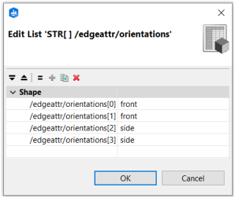
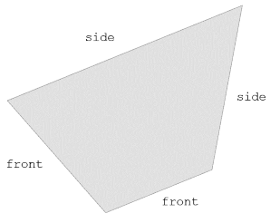
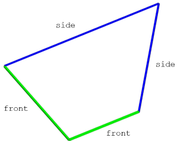
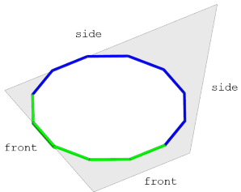
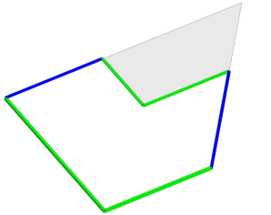
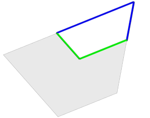

setTagsFromEdgeAttrs operation
Syntax
setTagsFromEdgeAttrs()
Description
The setTagsFromEdgeAttrs operation converts string edge attributes stored on the initial shape to edge tags stored on the current shape's geometry. It samples one element from each string attribute array for each face edge of the current geometry and stores them as tags on that edge.
The edge attribute /edgeattr/attributeName creates tags of the form "edgeattr.attributeName.sampledValue".
Related
- edgeAttr functions
- Geometry Tagging: Essential Knowledge
- tag operation
- deleteTags operation
- geometry.hasTags function
- geometry.tags function
Examples
String edge attribute setup
|  |  The initial shape has a string array with orientations set as edge attributes. See also Compute Edge Attributes tool. |
Setting edge tags
|  |
Visualizer -->
comp(e) { isTagged("edgeattr.orientations.front")
: GreenEdge
| isTagged("edgeattr.orientations.side")
: BlueEdge }
Lot --> setTagsFromEdgeAttrs()
Visualizer
The string edge attributes are set as tags.
|
|  |
Lot --> s(10,0,10)
primitiveDisk(12)
setTagsFromEdgeAttrs()
Visualizer
If the geometry has been modified, the attribute value is sampled for each face edge. See also Sampling on face edges example.
|
Setback and edge tags
|  |
Lot -->
setTagsFromEdgeAttrs()
setback(8) { isTagged("edgeattr.orientations.front")
: Visualizer }
The edge tags stay on the geometry when applying further operations. In this example, the setback operation also automatically copies "edgeAttr.orientations.front" from the source edges to the new setback edges. This information can be combined with the setback auto-tags.
|
|  |
Lot -->
setTagsFromEdgeAttrs()
setback(8) { isTagged("edgeattr.orientations.front")
: NIL
| remainder : Visualizer }
The edge tag "edgeAttr.orientations.front" is also copied to the appropriate edges in the remainder.
|
Copyright ©2008-2025 Esri R&D Center Zurich. All rights reserved.